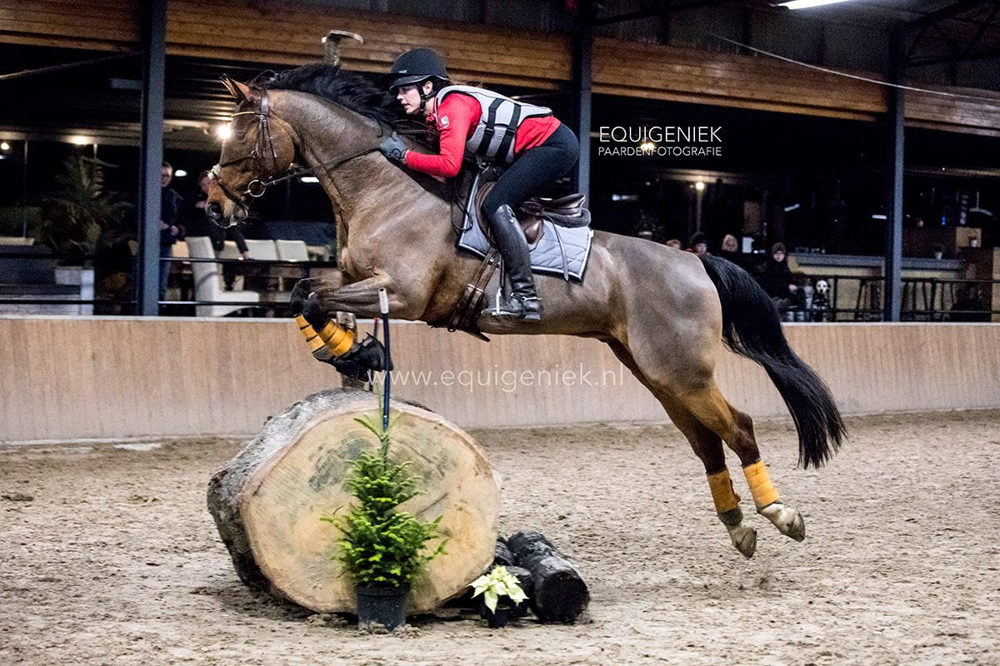

Vraag het ons gewoon
Onze vrijwilligers helpen je graag. Stel je vraag hieronder, dan komt hij meteen bij de juiste persoon.
Stel je vraag
Kies je onderwerp. Dan zie je meteen wat goed is om te weten, en komt je vraag bij de juiste persoon.
Wedstrijd en startlijsten
Een vraag over je inschrijving, de startlijst of afmelden? Het secretariaat helpt je verder.
- Inschrijven gaat via Mijn KNHS, wedstrijd W183853.
- Dinsdag 29 december dressuur en springen, woensdag 30 december de cross.
- De startlijsten staan online zodra ze definitief zijn.
Trainingen
Een vraag over een training, je groep of je tijd? We denken graag met je mee.
- € 30 per uur per combinatie.
- Trainen kan op maandag 28 en dinsdag 29 december.
- Kosteloos annuleren tot 15 december.
Stalling en overnachten
Stalling voor je paard en overnachten regel je direct bij de manege. Dat loopt niet via ons.
- Overnachten in je vrachtwagen kan alleen met je eigen stroom.
- Manege Het Zwarte Water in De Mortel.
Sponsoring
Sponsor worden of een vraag over je sponsoring? Laat je gegevens achter, dan nemen we contact met je op.
- Je logo komt op de site, bij alle sponsoren.
- Loes van Erp-Mooren vertelt je graag over de mogelijkheden.
Iets anders
Voor al het andere. We lezen alles.
- We zijn allemaal vrijwilligers en reageren zo snel mogelijk.
- Sinds 1999 organiseren we de Indoor SGW.
Bedankt, je vraag is binnen
Het secretariaat mailt je terug op .
Plan je verblijf
Kies je dagen, je paarden en wat je nodig hebt. Dan staat je mail aan Het Zwarte Water meteen klaar.
Veelgestelde vragen
Staat je vraag er niet bij? Mail ons gerust.
Hoe schrijf ik me in voor de wedstrijd?
Via Mijn KNHS, wedstrijdnummer W183853. Daar zie je ook alle rubrieken en startgelden. Naar Mijn KNHS
Wanneer staan de startlijsten online?
Zo snel mogelijk, zodra ze definitief zijn. Vragen of afmelden? Mail secretariaat@indoorsgw.nl.
Tot wanneer kan ik een training annuleren?
Tot 15 december kosteloos. Daarna blijven de trainingskosten staan.
Wat kost een training?
€ 30 per uur per combinatie.
Waar kan ik mijn paard stallen of zelf overnachten?
Bij Het Zwarte Water, via info@hetzwartewater.nl. Overnachten in je vrachtwagen kan alleen met eigen stroom. Alles over stalling
Moet mijn paard naar de dierenarts?
Ja, bij de cross is er een controle door de dierenarts voor én na de cross.
Hier vind je ons
Drie dagen in de hal van Manege Het Zwarte Water.
Locatie
Manege Het Zwarte Water in De Mortel.
info@indoorsgw.nl voor alles, secretariaat@indoorsgw.nl voor de startlijsten.
 Manege Het Zwarte Water
Manege Het Zwarte Water
De kaart komt van Google Maps en laadt pas als je erop klikt.